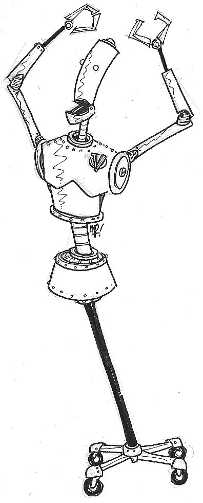

My job is to produce the insight that people need to improve their digital communications. I love to work with people, and I think it's important to help my clients learn the skills they need to own their own analytics.
I specialise in providing training and consultancy to digital teams to help them expand their analytics capability.
Services I provide
I've done a lot of different types of work as an analyst, here are some of the types I'm good at:
- Analyst Coaching
- Campaign Evaluation
- A/B/n testing
- Email Marketing Analysis
- Conversion Optimisation
- KPI reporting
Tools I've used
I have plenty of experience working with industry standard web analytics software, and I've spent extensive time using:
- Google Analytics
- Adobe's Omniture SiteCatalyst
- Adobe's Omniture Discover
- Experian's Hitwise
- Cognesia's Intellitracker